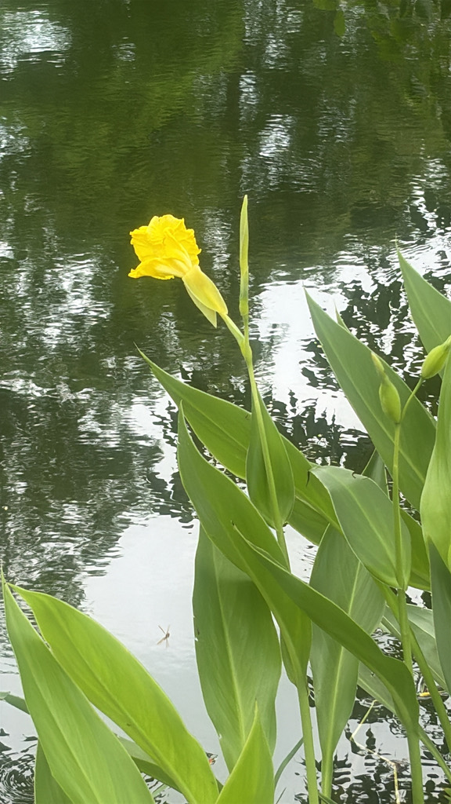

- Florida's only native Canna, this wetland wildflower produces large yellow blooms almost cartoonishly tropical for a plant that evolved right here.
- Its seeds are so hard they've been found intact and still viable in pre-Columbian archaeological sites — and hummingbirds are the main pollinators of the nectar-rich flowers.
- At Palma Sola these are the park's deliberately native cannas, planted by Cypress Pond in 2023 — not to be confused with the non-native ornamental cannas over by the office.
- From a starting handful they spread to over a hundred, were knocked back by hurricane saltwater, and are quietly fighting their way back.
Broadly distributed throughout Florida, found in most of the state's 67 counties, with native populations west to Texas and north to South Carolina. The only Canna species able to grow in partially inundated conditions, it occurs naturally in freshwater marshes, wet prairies, and along pond and lake margins. Its striking common name, Bandanna-of-the-Everglades, honors that wetland home.
- Canna seeds are legendary for their longevity and toughness. They are encased in an extraordinarily hard seed coat — hard enough that they were historically used as buckshot in the Caribbean, loaded into firearms where conventional shot was unavailable.
- More remarkably, intact Canna seeds found in pre-Columbian archaeological sites in Argentina have been successfully germinated after an estimated 600 years in storage — among the longest confirmed seed viability records for any flowering plant.
- Most cannas sold in Florida garden centers are not this species but hybrid cultivars bred for larger, showier flowers in a range of colors. The native Canna flaccida is more subtle — graceful yellow flowers on tall stalks above broad blue-green leaves — but ecologically far more valuable, and it is the only canna that belongs in Florida's wild wetlands.
- At Palma Sola, this plant carries a small restoration story. The park's native cannas were introduced by Cypress Pond in 2023 — the only truly native cannas on the grounds — and from a starting handful of about ten they thrived, spreading to more than a hundred plants. Then hurricane flooding drove a foot of saltwater across that corner of western Bradenton.
- As a freshwater wetland species with little salt tolerance, the planting was knocked back hard, down to around twenty survivors. Those survivors are hanging on and slowly recovering — a quiet lesson in both the resilience and the limits of a native plant pushed outside the conditions it evolved for.
- (The park's non-native ornamental cannas, a different species, grow separately by the office — see Canna Lilies, Canna indica.)
- The rhizomes contain a starch that has been commercially produced as an easily digestible food ingredient — historically valued for the sick and for infants — and marketed in Australia as 'Queensland arrowroot.'
The Golden Canna is one of the park's best hummingbird plants. The large, vivid yellow flowers are shaped and colored for hummingbird pollination — Ruby-throated Hummingbirds are primary pollinators, hovering at the blooms in spring and summer. Bees and large butterflies also visit.
It is a larval host for the Brazilian (or Canna) skipper, whose caterpillars roll a leaf into a protective tube; dragonfly larvae have also been recorded sheltering in the foliage. The seeds — extraordinarily hard and dense — are eaten by birds and waterfowl when accessible.
The broad, paddle-shaped leaves provide cover at the pond edge for frogs, lizards, and small wading birds, and the rhizome mass stabilizes soft pond margins and supports aquatic invertebrates. Because the park's planting sits right at the edge of Cypress Pond, it is doing this ecological work in almost exactly the freshwater-wetland setting it evolved for.
Primarily reproduces through seeds, which require scarification or soaking to germinate due to the exceptionally hard seed coat. Also spreads by rhizomes.
Large, yellow, 3 inches long, in terminal clusters atop stalks reaching 6 feet. Hermaphroditic and self-fertile. Peak bloom spring through summer. Primary pollinators: Ruby-throated Hummingbirds and large bees. Bats also documented as pollinators.
Round, very hard, dark brown to black — described as 'like ball bearings.' Among the hardest seeds of any flowering plant.
Large, oblong, blue-green, paddle-shaped — similar to a Canna lily but softer in color than most garden cultivars.
Fleshy, starch-rich, spreading slowly.
The tall yellow flower spikes rising above broad blue-green leaves at the water's edge are distinctive in Florida's wetland flora. Very few native wetland plants produce flowers this large and this yellow. Rattle a mature seed pod — the hard seeds knock audibly against each other.
The rhizomes yield a gentle, digestible starch used historically as food for the sick and for infants, and are edible raw as well — though it's rarely eaten today.
It has no known toxicity; all parts are edible with proper preparation.
PARK CONTEXT (confirmed): The park's only native cannas — Canna flaccida — introduced by Cypress Pond in 2023. Spread from ~10 to 100+ plants, then knocked back to ~20 by ~1 ft saltwater flooding from a 2024 hurricane (low salt tolerance); survivors slowly recovering. Deliberately kept separate from the non-native ornamental cannas (C. indica) by the office.
Cross-reference: Canna Lilies row, PSBP-00041.


- © Maria Escobar (CC-BY-NC), via iNaturalist
- © Randall Carter (CC-BY-NC), via iNaturalist